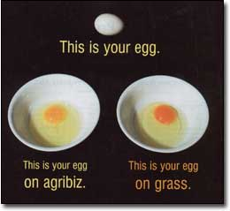
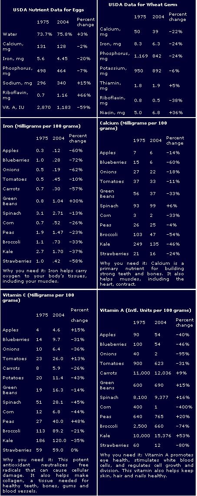
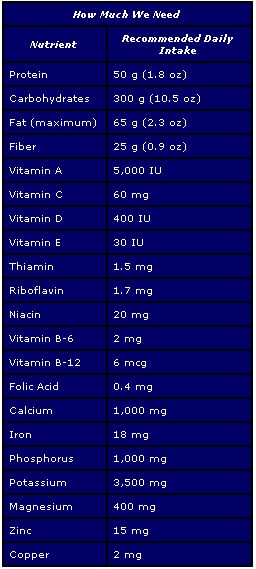
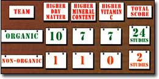

American agribusiness is producing more food than ever before, but the evidence is building that the vitamins and minerals in that food are declining. For example, take the two eggs shown at right. The one with the bright orange yolk is from a free-range chicken raised by Mother Earth News managing editor Nancy Smith, while the pale one is a supermarket egg from a hen raised indoors on a "factory farm." Eggs from free-range hens contain up to 30 percent more vitamin E, 50 percent more folic acid and 30 percent more vitamin B-12 than factory eggs. And the bright orange color of the yolk shows higher levels of antioxidant carotenes. (Many factory-farm eggs are so pale that producers feed the hens expensive marigold flowers to make the yolks brighter in color.)
Once upon a time, most of us ate eggs from free-range chickens kept by small, local producers. But today, agriculture has become dominated by agri-business. Most of our food now comes from large-scale producers who rely on chemical fertilizers, pesticides and animal drugs, and inhumane confinement animal production. In agribusiness, the main emphasis is on getting the highest possible yields and profits; nutrient content (and flavor) are, at best, second thoughts.
This shift in production methods is clearly giving us less nutritious eggs and meat. Beef from cattle raised in feedlots on growth hormones and high-grain diets has lower levels of vitamins E, A, D and betacarotene, and twice as much fat, as grass-fed beef. Health writer Jo Robinson has done groundbreaking work on this subject, collecting the evidence on her Web site, www.eatwild.com, and in her book "Pasture Perfect."
Similar nutrient declines can be documented in milk, butter and cheese. As one researcher writing in the Journal of Dairy Research explained, "It follows that continuing breeding and management systems that focus solely on increasing milk yield will result in a steady dilution of vitamins and antioxidants." (Today's "super-cows" are bred and fed to produce 20 times more milk than a cow needs to sustain a healthy calf.)
How much, and why, the nutrients in vegetables and fruits may be declining is less clear. Comparisons of 2004 data from the USDA's National Nutrient Database, with numbers from 1975, show declines in nutrients in a number of foods (see "Signs of Nutrient Decline," below) as well as some increases. When reports of apparent downward trends in nutrient content in vegetables and fruits appeared in 1999, we wrote to then-U.S. Secretary of Agriculture Dan Glickman for an explanation: "Is the drop linked to preventable factors, such as American agriculture's dependence on acidic nitrogen fertilizers and the effects of acid rain? Will you ask your top scientists to give us some direct answers?"
Writing on Glickman's behalf, Phyllis E. Johnson, director of the USDA's Agricultural Research Service in Beltsville, Md., confirmed the findings. "It is true that in many (but not all) cases, the apparent nutrient content of these vegetables decreased," Johnson said. She went on to list variables that might be related to the apparent decline, but she offered no indication that anyone at the USDA would be studying the issue further.
Recently, we contacted Johnson again, to find out whether there had been any new developments on the matter. Her office referred us back to the 1999 letter and told us Johnson had no additional comment on the subject.
Many things can impact the nutrient content of a vegetable or fruit. Variety type, soil quality, fertilizers, crop rotations, maturity at harvest time and the distance from farm to table all play a role in determining the vitamins and minerals in our food. We asked sustainable agriculture expert Charles Benbrook, Ph.D., if reliance on chemical fertilizers and emphasis on high yields might reduce the nutrients in fruits and vegetables. Benbrook has been studying the pros and cons of conventional and organic agriculture for more than 15 years. He explained factors that make organic foods rich in nutrients:
Fertilizers. Non-organic farmers use highly soluble nitrogen fertilizers, and keeping this nutrient in their soils is difficult. To be sure they get high yields, they often apply more nitrogen than the crops actually need.
This dependence upon chemical nitrogen fertilizers means we're getting less for our money, says Benbrook. Numerous studies have demonstrated that high levels of nitrogen stimulate quick growth and increase crop yields because the fruits and vegetables take up more water. In effect, this means consumers pay more for produce diluted with water. "High nitrogen levels make plants grow fast and bulk up with carbohydrates and water. While the fruits these plants produce may be big, they suffer in nutritional quality," Benbrook says, "whereas organic production systems [which use slow-release forms of nitrogen] produce foods that usually yield denser concentrations of nutrients and deliver consumers a better nutritional bargain per calorie consumed."
Benbrook says the USDA has a tacit policy to avoid discussions of differences in food quality and safety that may be a function of how food is grown and processed. "The Department made a political decision when they finalized the national organic rule; they declared that "organic" food was not nutritionally superior or safer than conventional food, even though there is solid evidence suggesting otherwise." This would certainly explain the response we got from Johnson's office.
What it all comes down to, Benbrook says, is that you can't buy soil quality in a bag any more than you can buy good nutrition in a pill. Organic farmers work to support the complex natural relationships between crop roots, soil microbes and minerals, but "scientists only understand a few of those relationships. Unless we understand much more fully what the critical balances are, it's very difficult to import them to the farm in a bag or a bottle."
Vitamin C. High nitrogen levels reduce the concentrations of vitamin C in crops such as lettuce, beets, endive, kale and Brussels sprouts. Similar effects have been detected on fruits such as apples, oranges, lemons and cantaloupe. Swiss studies have shown similar impacts on potatoes and tomatoes, as well as citrus fruits - which are major sources of this important vitamin.
Harvesting and storage. The fact that the average supermarket apple travels 1,500 miles from farm to table only adds to the problem. "Most fruits reach best eating quality and peak nutrition when fully ripened on the tree or plant," explains Julio Loaiza, Ph.D., a research scientist at Texas A&M University's Vegetable and Fruit Improvement Center. "However, fully ripened fruit may not withstand the harsh handling typically involved for travel to distant markets, which leads to a compromise in optimum maturity and nutritional quality."
Breeding for high yields. Plant breeders could maintain and even increase the nutrient content of most crops, if they were asked to do so. But this goal usually takes a back seat to economic issues: "Large-scale growers want size and fast growth so they can harvest early. These factors feed into sacrifices in nutritional quality," Benbrook says.
What we need is a more holistic approach to our food systems. We need to be sure that high yields and maximum profits for producers don't come with hidden price tags to consumers in terms of nutritional decline or environmental damage. This approach isn't anything new to organic farmers - they've been working their farms as holistic systems all along, and the result is a production system that is better for us, domestic animals and the environment. The growing evidence that organic foods are more nutritious is summarized in "Why Organic Food is the Winner," below.
Certified organic growers are not allowed to use chemical nitrogen fertilizers, ever. Instead they build soil fertility using cover crops, compost and slow-release natural fertilizers. Because they aren't grown with chemical nitrogen, organic fruits and vegetables tend to be smaller, and yields seem lower compared to non-organic crops. But as mentioned above, studies have shown that organic crops often contain less water, so in terms of actual nutrient value (and flavor) per bite of food, organic often is a better buy than non-organic produce.
The higher dry matter/lower water content of organic produce also impacts the levels of health-promoting antioxidants such as polyphenols and flavonoids. In a review of the scientific literature, Benbrook discovered that smaller fruits had up to five times more of these antioxidants per unit of calories.
There's more research that must be done before we can know to what extent the overall quality of our food is declining, and whether the rapidly expanding organic industry will be able to consistently produce more nutritious food than chemical-based agribusiness.
But Benbrook says the public health implications are considerable: "When you think about the diseases and long-term health problems that are caused by poor nutrition - heart disease, diabetes, cancer - the value to society of producing more nutritious crops is enormous."
Indeed, a 1992 USDA report estimated the following potential health benefits if everyone in the United States could be convinced to eat a diet containing the recommended daily amounts of primary nutrients shown in the table in the Image Gallery:
• 20 percent reduction in cancer
• 25 percent reduction in heart and vascular conditions
• 50 percent reduction in arthritis
• 20 percent reduction in respiratory and infectious diseases
• 50 percent reduction in infant and maternal deaths
So, it seems to us that the government should be doing more to monitor the nutrient content of our food, especially organic and pasture-based products. Currently, the USDA's National Nutrient Database, which is widely used as the "official" source for nutrient levels, includes more than 6,600 food products, including meat; fresh, frozen and canned produce; and processed foods. They even include candy bars, gumdrops, TV dinners and hundreds of fast food items in the database. But the agency has not included a single organic item, nor any entries for products from pasture-based meat or dairy systems. If they use our tax dollars to report the nutrients in candy bars, isn't it time they started including data on these healthier "alternatives," too?
If you agree that the government needs to do more to enhance the quality of our food supply, write your congressional representatives and let them know. After all, as one USDA secretary whispered while giving us the mandated brush off, "It's up to the public. If they really want to know, they have to press Congress to appropriate the funds." You also can send a message every time you shop for your groceries: When you choose organic or grass-fed products, you are helping support farmers and ranchers who are offering high-quality foods from sustainable production systems.
Here’s a summary of the evidence that nutrients in non-organic factory-farm foods are declining:
• Many vegetables appear to contain lower levels of vitamins and minerals today than they did in 1975, according to official USDA nutrient data reviewed by health writer Alex Jack. Jack has reported that a random sample of USDA data on a dozen vegetables showed that calcium has fallen an average of 26.5 percent, vitamins A and C have dropped 21.4 percent and 29.9 percent, and iron has plummeted by an average of 36.5 percent. (See tables, Page 42.)
• The concentrations of eight essential minerals in 20 fruits and 20 vegetables in Great Britain has declined, and water content has increased in fruits over the last 50 years, according to a paper by Anne-Marie Mayer in the British Food Journal (1997, Vol. 99, No. 6). She found that average calcium content had dropped 19 percent, iron was down 22 percent and potassium declined 14 percent for the 20 vegetables studied.
• Fruits and vegetables grown using synthetic chemical nitrogen may contain an average of 20 percent less dry matter and more water compared to organic crops fertilized with slower-release natural sources of nitrogen. Higher water content means lower nutrient concentrations per pound of produce (and weaker flavors). (See “Why Organic Food is the Winner,” Page 40.)
• Meat and dairy products from animals raised in feedlots or cages on high-grain diets contain lower levels of nutrients than meat from animals that are raised on their natural diet of grass, or, in the case of poultry, grass and grain.
• According to the USDA’s Nutrient Database, factory-farm eggs contain 20 percent less iron and 59 percent less vitamin A than they did in 1975. The USDA data also show that today’s eggs contain 3 percent more water than in 1975. (See “USDA Nutrient Data for Eggs” table, Image Gallery.)
• These factory-farm eggs contain significantly less health-enhancing carotenes than eggs from pasture-raised chickens. This difference is easy to see because the more carotenes, the more orange in color the yolks are. (See photo, above.) Factory-farm eggs also are lower in vitamin E, vitamin B-12, vitamin A, folic acid and omega-3 fatty acids, according to a remarkable collection of studies assembled by journalist Jo Robinson on her Web site. Robinson also documents that not only do factory-farm eggs contain less vitamins, they have more fat and cholesterol than eggs from pastured poultry.
• And last but certainly not least, there is this: Because of the last few centuries of human industrialization across the globe, today’s atmosphere contains 30 percent more carbon dioxide than it did during the millions of years that plants, animals and humans have been evolving together. And the CO2 levels are predicted to increase even more unless/until we reduce our CO2 emissions. CO2 is the basic building block for photosynthesis; when plants are exposed to higher levels of CO2, they produce a higher proportion of carbohydrates than normal and this may lead to reduced levels of other nutrients, per calorie. A startling literature review published in Trends in Ecology and Evolution (2002, Vol 17, No. 10), reported initial studies have found that the concentration of every measured element except potassium declined when wheat was grown at high levels of CO2 , and four out of five elements in brown rice declined. Global CO2 levels are predicted to continue to increase, and this could be yet another factor that is damaging the quality of our food.
Why Organic Food is the Winner
Little doubt remains that when we choose organic food, we are helping to protect the environment. It’s also clear that organic food contains much lower levels of pesticide residues than non-organic crops. Scientists have been slow to fully study claims that organic food is richer in nutrients, since research agendas and funding are so often driven by dominant non-organic commercial interests. Here’s what we know so far, though, thanks to a comprehensive review of more than 400 scientific papers that compared the quality of organic and non-organic foods. The review, published in 2001 by the nonprofit Soil Association of Great Britain, is titled “Organic Farming, Food Quality and Human Health: A Review of the Evidence" (see the last report on the page).
Higher dry matter?
Dry matter represents the non-water component of food - a lower dry matter content indicates a higher water content, which is undesirable for consumers in terms of the dilution of nutrients and flavor, and the price per pound. Ten studies have demonstrated a trend toward higher dry matter contents in organically grown crops, averaging 20 percent higher. One study showed slightly higher dry matter content in a non-organic crop (bananas), and eight studies found inconsistent or non-significant differences.
Higher mineral content?
Out of eight studies, seven demonstrated a trend toward higher mineral content in organic crops; one showed a trend toward higher minerals in non-organic crops that also used crop rotations and manure for fertilizer.
Higher vitamin C?
Seven studies comparing vitamin C content in fruits and vegetables showed a trend toward higher vitamin C (from 6 percent to as much as 100 percent more) in organic crops. No studies have found higher levels in non-organic crops, and six studies found inconsistent or non-significant results.
|
 MATTHEW T. STALLBAUMER Troubling Trends from the USDA Nutrient Database. |
 Recommended Daily Intake is based on a 2,000-calorie-per-day reference diet. |
 Why organic food is the winner. The newly established Organic Center has more information on the multiple benefits of organic foods at www.organic-center.org. |
|
 |
|
|